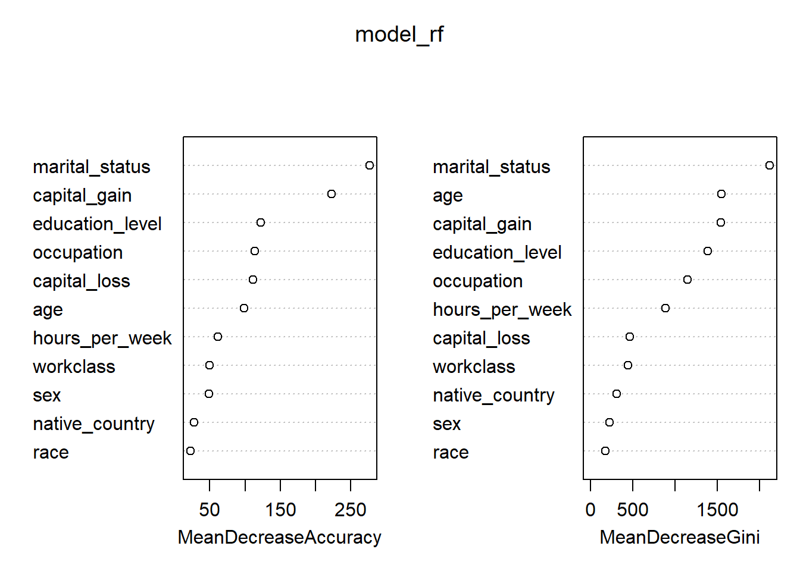

Identifying High Income Earners with Machine Learning
TL;DR This project uses a random forest model to predict the likelihood that an individual earns more than $50K and translates those predictions into actionable donor priority tiers. Model evaluation shows performance well above chance and a substantial lift over random outreach, making it a useful tool for targeted fundraising. These results are implemented in an interactive Shiny application that allows users to score individual donors or explore sample data to see how prioritization works in practice; a link to this demo app can be found here.
Introduction
Identifying potential donors is a constant challenge for small non-profits. With limited staff time and outreach budgets, organizations need better ways to decide who to prioritize and how to engage them.
This project demonstrates how machine learning can support donor targeting by estimating the likelihood that an individual earns more than $50,000 annually. This income level is selected due to the restraints in the data. The goal is not to replace human judgment, but to provide data-informed guidance that helps nonprofits allocate their resources more effectively.
The Data
The data used here is from the 1994 Census, which explicitly labels individuals with incomes as either above or below $50,000. The data originates from the UCI Machine Learning Repository to be used for learning purposes. Each row represents an individual donor profile, containing demographic, employment, and economic characteristics.
age workclass education_level education-num
Min. :17.00 Length:45222 Length:45222 Min. : 1.00
1st Qu.:28.00 Class :character Class :character 1st Qu.: 9.00
Median :37.00 Mode :character Mode :character Median :10.00
Mean :38.55 Mean :10.12
3rd Qu.:47.00 3rd Qu.:13.00
Max. :90.00 Max. :16.00
marital-status occupation relationship race
Length:45222 Length:45222 Length:45222 Length:45222
Class :character Class :character Class :character Class :character
Mode :character Mode :character Mode :character Mode :character
sex capital-gain capital-loss hours-per-week
Length:45222 Min. : 0 Min. : 0.0 Min. : 1.00
Class :character 1st Qu.: 0 1st Qu.: 0.0 1st Qu.:40.00
Mode :character Median : 0 Median : 0.0 Median :40.00
Mean : 1101 Mean : 88.6 Mean :40.94
3rd Qu.: 0 3rd Qu.: 0.0 3rd Qu.:45.00
Max. :99999 Max. :4356.0 Max. :99.00
native-country income
Length:45222 Length:45222
Class :character Class :character
Mode :character Mode :character
# Check NAscolSums(is.na(donations))
age workclass education_level education-num marital-status
0 0 0 0 0
occupation relationship race sex capital-gain
0 0 0 0 0
capital-loss hours-per-week native-country income
0 0 0 0
# convert categorical to factorsdonations <- donations %>%mutate(across(where(is.character), as.factor))# convert income to binarydonations <- donations %>%mutate(income =if_else(income ==">50K",1,0))prop.table(table(donations$income))
0 1
0.752156 0.247844
The outcome variable, income, is converted into a binary classification problem:
1 → earns $50,000 or more
0 → earns less than $50,000
We can also see that the dataset is imbalanced, with 75% of individuals earning less than $50,000 annually. Remember this imbalance when we move onto evaluating the model.
The Model
Model Choice: Random Forest
We’ll be using Random Forest classifier, which is well-suited for this task because it:
Handles nonlinear relationships and interactions naturally
Performs well with mixed numeric and categorical predictors
Is robust to noise and missing information
Train Model
We split the data into training and testing sets, using 80% of the data for training and 20% for evaluation. This ensures the model is assessed on data it has not seen before. We’ll also remove education-num and relationship since they are both correlated with other variables (education_level and marital-status respectively).
Confusion Matrix and Statistics
Reference
Prediction 0 1
0 6358 780
1 440 1466
Accuracy : 0.8651
95% CI : (0.8579, 0.8721)
No Information Rate : 0.7517
P-Value [Acc > NIR] : < 2.2e-16
Kappa : 0.6194
Mcnemar's Test P-Value : < 2.2e-16
Sensitivity : 0.9353
Specificity : 0.6527
Pos Pred Value : 0.8907
Neg Pred Value : 0.7692
Prevalence : 0.7517
Detection Rate : 0.7030
Detection Prevalence : 0.7893
Balanced Accuracy : 0.7940
'Positive' Class : 0
We can see that this model achieves 86% overall accuracy, which may seem high at first glance. However, accuracy alone can be misleading, especially when the underlying data are imbalanced.
In this dataset, the majority (75%) of individuals earn less than $50,000, meaning a model could achieve relatively high accuracy simply by predicting the most common outcome. To account for this, we use Cohen’s Kappa, a statistic that measures how much better the model performs compared to random chance.
In this context, agreement refers to how often the model’s predictions align with the true income labels—treating the model as one “rater” and the observed data as another. Cohen’s Kappa adjusts this agreement by subtracting the portion that would be expected simply due to the class imbalance in the data. The statistic ranges from −1 (perfect disagreement) to 1 (perfect agreement), with 0 indicating that the model’s predictions are no better than random guessing.
In this case, the model’s Kappa of 0.6191 hovers on the threshold between moderate and substantial agreement, according to Landis & Koch (1977). This tells us that the model is performing meaningfully better than chance but there is still room for improvement, particularly in identifying higher-income donors.
Model Interpretation
While overall accuracy and agreement metrics tell us how well the model performs, it is also important to understand what the model is learning.
Random Forest models provide a built-in measure of variable importance, which helps identify which features contribute most to the model’s predictions.
Understanding Variable Importance
To better understand how the model is making predictions, we examine variable importance using two complementary measures provided by Random Forests: Mean Decrease in Accuracy and Mean Decrease in Gini. Each captures a different aspect of importance. The Mean Decrease in Accuracy measures how much the model’s prediction accuracy drops when a variable’s values are randomly permuted. In other words, it determines how much worse the model would perform if we scrambled each variable. Higher values indicate variables that are more critical to the model’s predictive accuracy.
From the results:
marital_status shows the largest drop in accuracy, making it the most influential predictor under this metric.
capital_gain is also highly influential, reinforcing its strong association with higher income.
education_level, occupation, and capital_loss form a second tier of important predictors.
Variables such as race, native_country, and sex contribute relatively little to overall accuracy.
This suggests the model relies far more on economic and household characteristics than on demographic attributes.
The Mean Decrease in Gini measure how much a variable improves node purity across all trees in the forest. Meaning, it reflects how often and how effectively a variable is used to split the data.
In the Gini-based ranking:
marital_status stands out dramatically, with the highest importance by a wide margin.
age, capital_gain, and education_level also rank highly, indicating they are frequently used to create informative splits.
Variables such as race, sex, and native_country again appear near the bottom.
Interpreting the differences
While both metrics identify similar top predictors, they emphasize slightly different aspects of importance:
Mean Decrease in Accuracy highlights variables that are essential for overall predictive performance.
Mean Decrease in Gini highlights variables that are frequently useful for splitting the data.
For example, age ranks more highly under Gini than Accuracy, suggesting it is often used in tree splits but may be somewhat redundant once other variables are known.
varImpPlot(model_rf)

importance(model_rf, type =1) %>%as.data.frame() %>%rownames_to_column("variable") %>%arrange(desc(MeanDecreaseAccuracy))
Variables such as marital_status, capital_gain, and education_level rank highly in importance. This aligns with existing research on income prediction and gives us confidence that the model is leveraging meaningful socioeconomic signals rather than noise.
Importantly, these importance measures are descriptive, not causal. They tell us which variables help the model distinguish income levels, not why those relationships exist.
From Classification to Targeting
Rather than relying solely on predicted classes (0 or 1), we can extract predicted probabilities from the Random Forest. These probabilities allow us to rank individuals by estimated likelihood of earning more than $50K, which is far more useful for fundraising strategy.
Using these probabilities, we define donor tiers that translate model output into actionable segments. This approach mirrors how predictive models are typically deployed in real-world non-profit and marketing settings: not as binary classifiers, but as ranking tools.
Before evaluating the value of the model, recall that 75% of respondents earned less than $50K, thus making our baseline for comparison 25%. This means that if a nonprofit were to contact donors at random, roughly one in four would fall into the higher-income category.
# baseline ratemean(test$income==1) #25%
[1] 0.2483414
Measuring Lift
Lift compares the model’s targeting performance against what would be expected from random outreach. Rather than focusing on overall accuracy, lift quantifies the improvement gained by using model-driven targeting instead of contacting individuals without any prioritization. This makes it particularly useful in fundraising and outreach settings, where the goal is not just correct classification but more efficient allocation of limited resources.
# A tibble: 3 × 4
donor_tier avg_prob actual_high_income_rate n
<chr> <dbl> <dbl> <int>
1 High Priority 0.937 0.886 1123
2 Low Priority 0.0880 0.109 7136
3 Medium Priority 0.642 0.601 785
# high priority tier0.886/0.248
[1] 3.572581
# medium priority lift0.601/0.248
[1] 2.423387
When outcomes are summarized by donor tier, the advantage of this approach becomes clear. Individuals in the high priority tier are approximately 3.5 times more likely to earn $50,000 or more compared to random selection. The medium priority tier also performs well, with individuals about 2.5 times more likely to be high-income earners. These results indicate that the model successfully concentrates higher-value prospects into smaller, more actionable groups.
Overall, these lift values demonstrate that the model provides meaningful practical value beyond baseline accuracy. By shifting outreach toward higher-probability donors, organizations can improve efficiency, reduce wasted effort, and make more informed decisions about how to deploy their fundraising strategies.
Conclusion
Overall, this project shows how machine learning can be used as a practical decision-support tool rather than a purely technical exercise. While the model’s 86% accuracy provides a helpful baseline, deeper evaluation using Cohen’s Kappa, probability estimates, and lift demonstrates that the model is learning meaningful patterns and performing well beyond chance. By shifting the focus from binary predictions to ranked probabilities, the model becomes far more useful for real-world fundraising decisions.
Most importantly, the results translate cleanly into action. The donor tiering approach highlights how targeted outreach can dramatically outperform random contact, with high-priority donors being nearly four times more likely to have higher income than the baseline population. This framing aligns closely with how non-profits actually operate, where limited staff time and resources make prioritization essential rather than optional.
To see this model in action, I have created a Shiny web application that can be found here. You can calculate an individual’s probability of being a $50K+ earner by entering information in the left panel. You can also see an example of what it would look like if you were to upload a file containing potential donor information by selecting the “Load Sample Donor Data” button.
Need Help? If you have questions or would like personalized guidance on implementing these practices in your organization, please contact me.